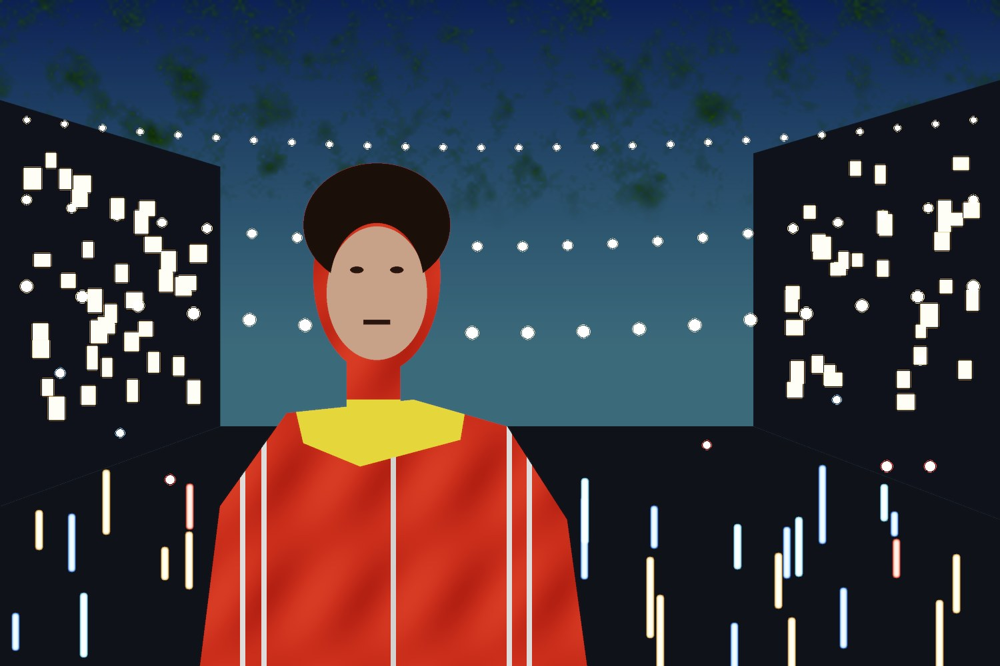
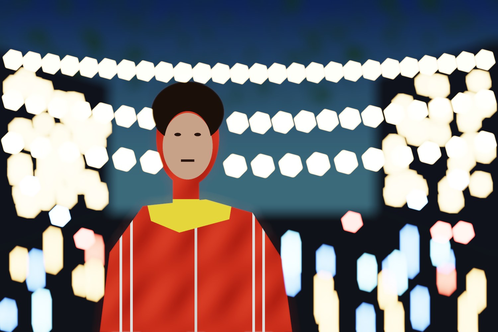
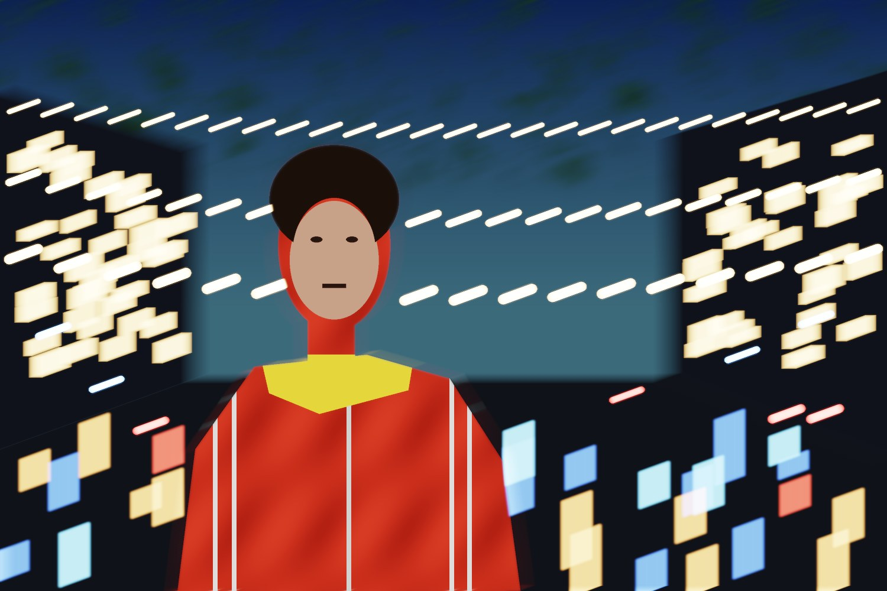
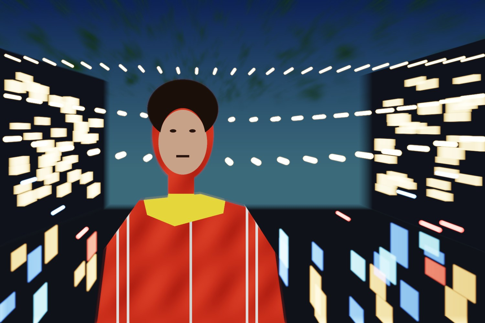
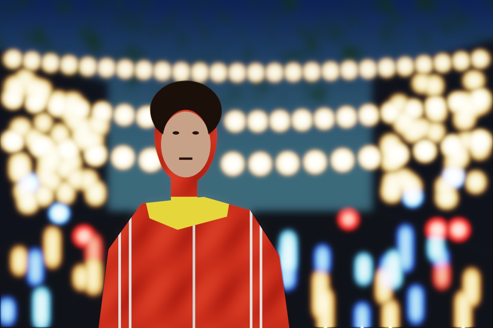

Blur · the four types, through one mask
One node, a Type control (Soft, Lens, Motion, Zoom). Every type reads the same mask the same way: with “Respect mask edges” on, nothing from outside the mask is blurred in. The pictures are the maths of docs/33 by blur_ref.py on a synthetic scene (no photograph).

The synthetic scene. Everything is sharp.

Radius 50 · a Gaussian, σ half the radius. Mask: Subject, inverted.

Radius 50 · 6 blades, rotation 15° · Highlights 60. Same mask.

Length 45 · Angle 20°. Same mask.

Amount 80 · centre at the figure's face. Same mask.

Radius 40. Mask: a Depth row (far things), no Subject row: the street recedes upward, the figure is nearest. The “Blur the background” starting point.